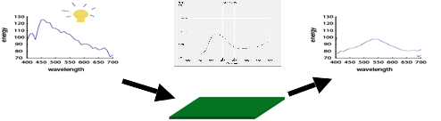
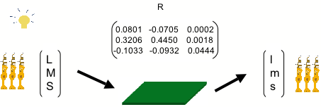
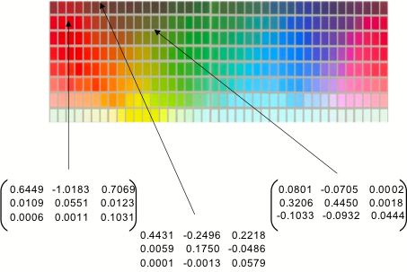
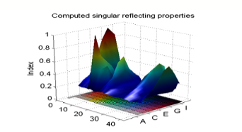
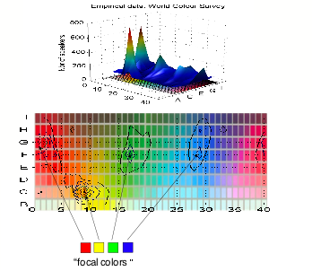
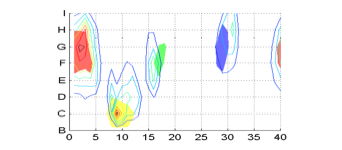

To more fully understand the laws
that govern how we "visually manipulate" color, consider first how
physicists measure surface color
Physicists define what they call
the reflectance function of a surface[1].
A reflectance function is a function that predicts, for any incoming light,
what the reflected light from the surface will be. A reflectance function can
be represented as a graph which indicates, for every individual wavelength of
visible light, to what extent the surface reflects that wavelength. For
example, this Figure shows an incoming light spectrum (on the left) being
transformed into a reflected spectrum on the right. The function that defines
this transformation is the graph in the middle, which indicates for each
wavelength what proportion of the incident light energy is reflected. The
example used is the reflectance function for a green-colored surface from the
so-called Munsell collection of "color chips" used in color tests.
Now, defining reflectance in terms
of each wavelength of visible light is fine for physicists who have
spectrometers that can measure light energy at every individual wavelength. But
humans don't have finely tuned spectrometers in their eyes, they only have photoreceptors, which are much more roughly tuned, being sensitive
to very wide ranges of wavelengths.

Therefore as far as human vision
is concerned we need a way of describing reflectance in terms of how it
modifies the responses of the three photoreceptor types that humans possess,
instead of at every individual wavelength of light.
In my laboratory we have done an
analysis of how this can be done[2].
It turns out that instead of using the physicists’ reflectance function, from
the biological viewpoint of our human photoreceptors, the chromatic
"behavior" of any surface can be accurately characterized by nine
numbers. The nine numbers define a 3x3 matrix R that allows you to calculate,
for any light source, how the surface will affect the responses of the three
human photoreceptor types. Suppose for example we use a light source whose
absorption by the three types of human photoreceptors is given by the three
numbers L, M, S. Then when the light is reflected off the surface, what will
impinge on the photoreceptors will be light whose absorption will be given by
the three numbers l,m,s. The matrix R allows us to calculate (l,m,s) from
(L,M,S) using matrix multiplication: (l, m, s)’ = R (L, M, S)’
Once we have the matrix R for a
given surface, we will be able to tell how that surface will modify the eye’s
reaction to that surface, in all situations, for any incoming light.

How do we get the matrix R for a surface?
Calculating the nine numbers for a surface is a simple mathematical exercise if
you have the surface's reflectance function, as measured by physicists, and if
you know the human photoreceptor absorption functions. In my laboratory we have
calculated the matrices for a subset of the surfaces used in the Munsell set of
color chips, whose reflectance functions can be found in public databases. Some
examples are shown in the figure.

So what?
If you're not a mathematician these numbers won't mean very much to you. But if you're a mathematician, you'll notice something very interesting. Some of the matrices are what's called "singular". This means that instead of behaving normally, these matrices have a special behavior. Normally a 3 x 3 matrix R takes a vector in the three-dimensional space of L,M, S values into the three-dimensional space of l,m,s values. But if R is a singular matrix, it takes a vector in the three-dimensional space of L,M,S values into a two-dimensional or a one-dimensional subspace of the three dimensional space of l,m,s values.
Said in another way: the behavior
of some surfaces is simpler than normal.
These simpler surfaces transform incoming light in a more restricted way:
whatever the variations in the incoming light, the outgoing light is restricted
to a two-dimensional subspace (a plane) or a one-dimensional subspace (a line)
in what would usually be a three-dimensional space of possible l,m,s values.
We can define a "singularity
index" which describes the degree to which a given matrix R is singular in
this way[3].
The Figure below plots this singularity index for our subset of the Munsell
color chips.
And now we see something
surprising. There are two chips which are strongly singular, the red and the
yellow chips. There are a few more chips which are less strongly singular: the
blue, green, magenta and cyan chips.

And now for a little interlude....
NB final figure
will be more like the next figure, below, so the two can be compared.
In the mid 1960's, Brent Berlin and Paul
Kay, two anthropologists at the University of California at Berkeley
sent out their graduate students on a curious quest. They scoured the San
Francisco Bay area for native speakers of exotic foreign languages, of which
they found 27. They showed speakers of each language a palette of about 300
colored surfaces, and asked them to mark the colors which were
"focal", in the sense that people considered them to be the best
examples of the most basic[4]
color terms in their language. To complement that study, Berlin and Kay
subsequently contacted missionaries and other collaborators in foreign
countries throughout the world, and established what is now called the "World
Color Survey"[5]. The survey
compiles data about color names in a total of 110 languages, ranging from
Abidjii in the ivory Coast through Ifugao in the Philippines to Zapoteco in
Mexico.
The figure below plots the result of their study. For each
color patch in the palette of colors they used, is shown the number of people
in the World Color Survey who considered that color to be "focal".
What is surprising is that the graph has essentially four
clear peaks.
Red, chip number G1 is clearly an all-out favorite, showing
that if a culture has a word for red, then the particular shade of red that
best represents the meaning of the word "red" will be G1, whatever
the culture! There is more variability for
the other colors, but it is clear that certain colors always win out as
compared to others. Focal yellow tends always to be patch C9, Focal green is
F17 and focal blue is F28 or H28.

Why exactly those patches?
But now let us compare the singularities in color we calculated
in the earlier sections with Berlin and Kay's data. The Figure below
superimposes the two graphs, plotting the focal colors of Berlin and Kay's
survey as the flat red, yellow, green and blue patches, and the singularity
index as the contour plot.

The agreement is quite surprising. Our calculated
singularities in surface color are within a few chips of the Berlin and Kay
data.
Perhaps you are not accustomed to looking at results from
experiments in the social sciences. But let me assure you that it is very rare
that data acquired by psychologists or anthropologists can be so accurately
accounted for. Humans are inherently variable, and experimental methods are
subject to all sorts of biases. Agreement between theoretical predictions and
results from experiments is rarely as good as what we see in this Figure.
It seems therefore that the sensorimotor approach to color
here registers surprising successes. By taking a philosophical stance about
what color really is (a law governing our interactions with colored surfaces),
we have been able to account for classical phenomena in color science that have
until now not been satisfactorily explained.
Of course more work needs to be done. Berlin & Kay's
data is considered controversial: the procedures used to question participants
may have caused biases. The experimenters were missionaries and other helpers
not trained in psychophysics. But still, the fact that from first principles
and simple mathematics we have found such a surprising coincidence surely is
worth noting.
Another point is that we would like to have a learning
mechanism that explains why singular
surface colors should be expected to acquire names, whereas other colors would
not. A start in this direction would be to suggest that the simpler behavior of
singular surfaces under changing lights makes them stand out from other colors.
But even though we don't yet have a mechanism, the coincidence between naming
and singularity, and the success of our predictions for unique hues are so
compelling that this suggests that there is something right about the
sensorimotor approach.
How has the sensorimotor approach gone further in explaining
the raw feel of color than approaches based on the "neural correlate"
approach?
The neural correlate approach postulates that the feel of,
say, red is generated by some neurophysiological mechanism. For example it
attempts to explain why red is different from green by saying that the red
sensation and green sensation are generated by different groups of neurons or
neural mechanisms.
Neurophysiological constraints do of course determine what
kinds of light we can and cannot see. For example the simple fact that we have
no photoreceptors sensitive to the ultraviolet part of the spectrum means that
we cannot see patterns that birds and bees see, like ultraviolet sunlight that
gets through clouds and that they use to orient themselves. Another important
constraint is imposed by the fact that our photoreceptors are very broadly
tuned. This means that a variety of lights that birds and bees distinguish will
all look identical to us[6].
Further constraints may be imposed by the wiring of the color system if it
introduces transformations in which information about the incoming light is
lost.
But as I have argued in the book, neural mechanisms will
never be able to explain why particular neural activations induce the
sensations that they do. Even if the known red/green and blue/yellow channels
turned out to coincide with data on unique hues (and they do not in fact!), one
would still have to explain why activation in the red/green channel provides a
different feel from activation in the blue/yellow channel, and why activation
of the red/green channel in the red direction provokes a different feel from
activation in the green direction.
Further questions that would be left open by a neural
correlate approach are: Why does color have a feel rather than no feel at all?
Why is the feel of a visual nature rather than being like, say, touch or
hearing or smell?[7]
If we take the neurophysiological approach, we at some point
always must provide some explanation of what it is exactly about each
particular neural firing pattern which gives rise to the particular feel that
it gives rise to. There would seem to be no way of making the link between feel
and neural activity in any principled way.
On the other hand under the sensorimotor approach, although
we cannot hope to describe every single aspect of the laws that govern our
interactions with the environment, we know that in principle every such aspect,
every peculiarity, every particular difference between different feels, will
potentially be constituted by a
corresponding aspect of our mode of interaction.
So whereas under the neurophysiological explanation we have
no hope of finding the link between feel and neural activity, under the
sensorimotor explanation, we at least in principle have a way of understanding all the aspects of a feel
even if we may not have access to them in detail.
[1] There is also the bidirectional reflectance function, which describes how the reflected light is affected by the angle of incidence of the light, and by the angle from which you observe it. This is an extra complexity which I will not consider.
[2] This work was done by David Philipona for his PhD, and is only the beginnings of a possible sensorimotor approach to color. However it has provided some very exciting insights.
[3] cf. Philipona & O'Regan REF
[4] "Basic" color terms are words in the language upon which most speakers agree, and which apply to a variety of different objects.
[5] The stimuli, instructions and results are publically accessible on http://www.icsi.berkeley.edu/wcs/data.html
[6] This phenomenon is called "metamerism". The light from a computer picture of a rose is a sum of spectra deriving from three pixel colors. The light coming off a real rose will have a totally different spectrum, even though it looks exactly the same to humans. To a bird or bee, which have more than three photoreceptors, the picture and the real rose would not look the same color however.
[7] QUESTION: can facts like that maximally saturated yellow is a light
color, but maximally saturated blue is a dark color be explained this way?
Asymmeetries mentioned in hardin: color for philosophers, p. 141-2:
“substantially different number of perceptually equal hue steps in the interval
between yellow and green as compared to the hue-shift counterpart interval
between red to blue (Kuehni, 1983)